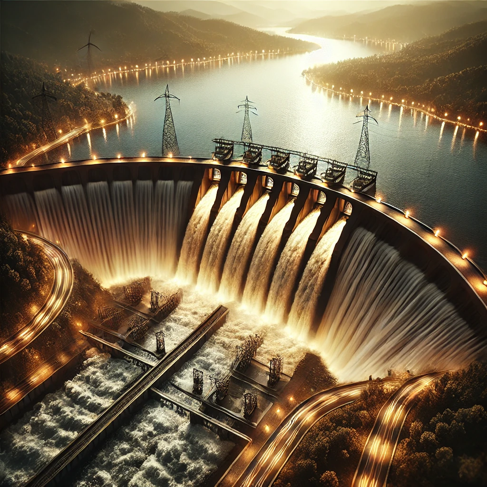

La energía hidroeléctrica es la electricidad que se genera a partir de la fuerza del agua. Es una fuente de energía renovable, limpia y autóctona. Cómo se produce Se construyen grandes infraestructuras hidráulicas, como presas, para aprovechar el potencial del agua. El agua se almacena en un embalse. El agua se hace pasar por un sistema de conductos hasta una sala de máquinas. El agua impulsa una turbina que genera electricidad. Ventajas Contribuye a la lucha contra el cambio climático. Reduce la dependencia energética exterior. Favorece el desarrollo económico y la generación de empleo local. Contribuye a la recuperación de tierras y al riego en épocas de sequía. Ayuda a estabilizar la red eléctrica. Desventajas La construcción de las presas hidráulicas supone una inversión inicial importante. Ejemplos La Central Hidroeléctrica Simón Bolívar, en Venezuela, también llamada Represa del Guri.
